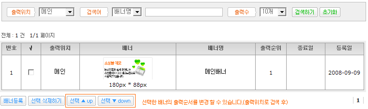

02. 배너 등록하기
A. 출력 위치 : 메인 페이지, 고객센터, 로그인페이지, 카테고리박스에서 선택 하시면 됩니다.
B. 배너명 : 배너명을 입력 하시면 됩니다.
C. 상태 : 사용, 일시정지에서 선택 하시면 됩니다. 일시 정지는 종료일이 남았지만 일시적으로 배너를 사용하지 않을 경우 선택 하시면 됩니다.
D. 타겟 : 현재창, 새창에서 선택 하시면 됩니다. 배너 클릭시 새창에 나타날 건지 쇼핑몰이 보여지고 있는 창에 나타날건지 선택 하시면 됩니다.
E. 종료 날짜 : 종료 날짜를 선택 하시면 됩니다. 종료 날짜를 입력하지 않으면 배너가 계속 나타 납니다.
F. 배너 : 배너를 등록 하시면 됩니다. 배너의 가로 사이즈를 확인 하시고 작업 하시기 바랍니다.
G. 링크 주소 : 배너 클릭시 이동할 링크주소를 입력 하시면 됩니다.
H. 분류 : 카테고리박스일 경우 나타 납니다. 배너가 등록될 분류를 선택 하시면 됩니다.
